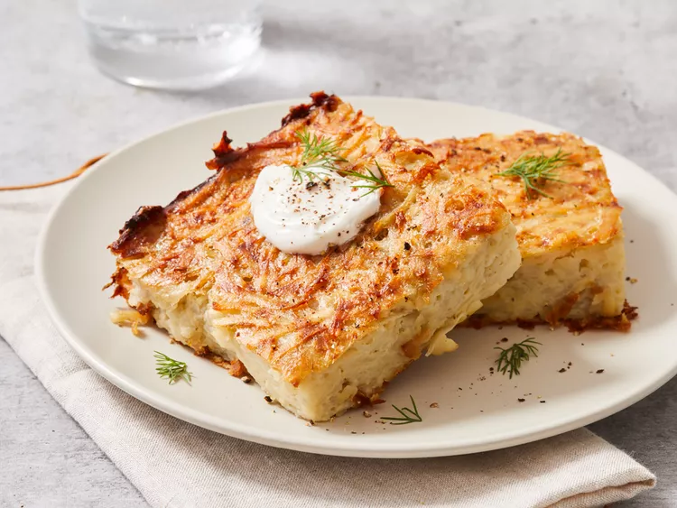

Potato kudel

A traditional Jewish dish, often served during Shabbat and holidays like Passover. It's a savory baked casserole made primarily from grated or puréed potatoes, onions, eggs, and seasonings like salt and pepper. The dish is known for its crispy golden crust on the outside and soft, fluffy interior.
Ingredients
- 1 tablespoon vegetable oil
- 10 medium potatoes, peeled and grated
- 2 medium onions, peeled and grated
- 5 large eggs
- ⅓ cup vegetable oil
- 2 teaspoons salt
- 1 teaspoon black pepper
Steps
- Gather all ingredients. Preheat the oven to 350 degrees F (175 degrees C). Grease a 9x13-inch baking dish with 1 tablespoon vegetable oil.
- Combine grated potatoes and onions in a large bowl. Mix in eggs, 1/3 cup of vegetable oil, salt, and pepper until well combined; pour mixture into the prepared dish.
- Bake in the preheated oven until golden brown and crisp on top, 1 ½ to 2 hours.
Home